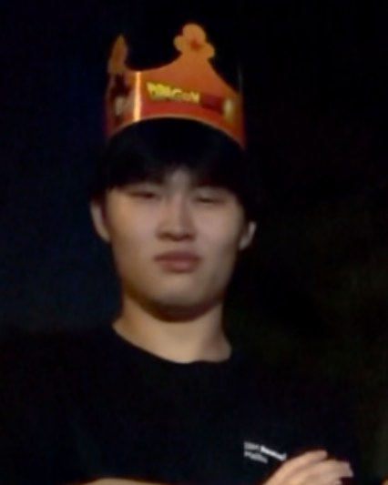

Recent Watches
- loading diary…
latest from the letterboxd diary — pulled fresh each visit.
Data scientist in training. Scaling personal interests into broader patterns — the kind of work where curiosity itself becomes the dataset.

decoding my process
Less of a log, more of a desk — a few things in rotation right now, arranged the way I'd actually arrange them. If you've scrolled this far, you're getting the off-the-clock version.
latest from the letterboxd diary — pulled fresh each visit.
the current rotation.
portraits of people who kept their light on when the world dimmed. essays that ask the right questions.
all four sports, all in LA. the calendar keeps me company year-round — this row updates itself as seasons start and end.
tracing the rookie arc — splitter shape, velocity dip, workload translation. narrative-led, data-honest. variance97 lives; this is the next one.